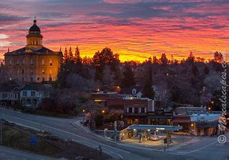
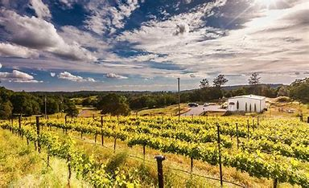

Auburn is a city in Placer County, California, United States. Its population was 13,776 during the 2020 census. Auburn is known for its California Gold Rush history and is registered as a California Historical Landmark. Auburn is part of the Sacramento metropolitan area.
Archaeological finds place the southwestern border for the prehistoric Martis people in the Auburn area. The indigenous Nisenan, an offshoot of the Maidu, were the first to establish a permanent settlement in the Auburn area. In the spring of 1848, a group of French gold miners arrived and camped in what would later be known as the Auburn Ravine. This group was on its way to the gold fields in Coloma, California, and it included Francois Gendron, Philibert Courteau, and Claude Chana. The young Chana discovered gold on May 16, 1848. After finding the gold deposits in the soil, the trio decided to stay for more prospecting and mining. Placer mining in the Auburn area was very good, with the camp first becoming known as the North Fork Dry Diggings. This name was changed to the Woods Dry Diggings, after John S. Wood settled down, built a cabin, and started to mine in the ravine. The area soon developed into a mining camp, and it was officially named Auburn in August 1849, by miners from Auburn, New York. By 1850, the town's population had grown to about 1,500 people, and in 1851, Auburn was chosen as the seat of Placer County. Gold mining operations moved up the ravine to the site of present-day Auburn. In 1865, the Central Pacific Railroad, the western leg of the First transcontinental railroad, reached Auburn, as it was being built east from Sacramento toward Ogden, Utah. The restored Old Town has houses and retail buildings from the middle of the 19th century. The oldest fire station and the Post Office date from the Gold Rush years. Casual gold-mining accessories, as well as American Indian and Chinese artifacts, can also be viewed by visitors at the Placer County Museum. Auburn was the home and birthplace of noted science fiction and fantasy poet and writer Clark Ashton Smith. A memorial to him is located near Old Town.
According to the United States Census Bureau, the city has a total area of 7.2 square miles, of which 0.03 square miles, or 0.38%, is water. Auburn is situated in the Northern California foothills of the Sierra Nevada range, approximately 800 vertical feet above the confluence of the North Fork and Middle Fork of the American River. It is located between Sacramento and Reno, Nevada, along Interstate 80. Mountainous wilderness canyons and the western slope of the Sierra Nevada lie adjacent eastward, while gentle rolling foothills well-suited for agriculture lie to the west. The crest of the Sierra Nevada lies approximately 45 miles eastward, and the Central Valley lies approximately ten miles to the west.
Auburn has a hot-summer Mediterranean climate that is characterized by cool, moist winters and hot, dry summers. Average December temperatures are a maximum of 55.8 °F and a minimum of 37.2 °F. Average July temperatures are a maximum of 92.7 °F and a minimum of 63.4 °F. Annually, there are an average of 62.9 days with highs of 90 °F or higher, an average of 7.3 days with 100 °F or higher, and an average of 19.6 days with 32 °F or lower. The record high temperature was 113 °F (45 °C) on July 15, 1972. The record low temperature was 5 °F on December 9, 2013. Average annual precipitation is 36.12 inches. There are an average of 67 days with measurable precipitation. The wettest year was 1983 with 64.87 inches and the driest year was 1976 with 11.76 inches. The most precipitation in one month was 23.08 inches in January 1909. The most precipitation in 24 hours was 5.41 inches on October 13, 1962, during the Columbus Day Storm. Snow rarely falls in Auburn; the most snowfall in one year was 10.7 inches in 1972, including 6.5 inches in January of that year. Auburn's Köppen classification and climate similarities to locations such as Napa, California, and parts of Italy make it a suitable region for growing wine grapes. Auburn and the surrounding areas of Placer County are home to over 20 wineries.


The 2010 United States Census reported that Auburn had a population of 13,330. The population density was 1,860.2 inhabitants per square mile. The racial makeup of Auburn was 11,863 (89.0%) White, 100 (0.8%) African American, 129 (1.0%) Native American, 240 (1.8%) Asian, 9 (0.1%) Pacific Islander, 405 (3.0%) from other races, and 584 (4.4%) from two or more races. Hispanic or Latino of any race were 1,331 persons (10.0%). The Census reported that 13,052 people (97.9% of the population) lived in households, 145 (1.1%) lived in non-institutionalized group quarters, and 133 (1.0%) were institutionalized. There were 5,759 households, out of which 1,502 (26.1%) had children under the age of 18 living in them, 2,613 (45.4%) were opposite-sex married couples living together, 604 (10.5%) had a female householder with no husband present, 257 (4.5%) had a male householder with no wife present. There were 352 (6.1%) unmarried opposite-sex partnerships, and 33 (0.6%) same-sex married couples or partnerships. 1,845 households (32.0%) were made up of individuals, and 801 (13.9%) had someone living alone who was 65 years of age or older. The average household size was 2.27. There were 3,474 families (60.3% of all households); the average family size was 2.85. The population was spread out, with 2,645 people (19.8%) under the age of 18, 1,031 people (7.7%) aged 18 to 24, 2,898 people (21.7%) aged 25 to 44, 4,224 people (31.7%) aged 45 to 64, and 2,532 people (19.0%) who were 65 years of age or older. The median age was 45.4 years. For every 100 females, there were 89.5 males. For every 100 females age 18 and over, there were 86.1 males. There were 6,139 housing units at an average density of 856.7 per square mile, of which 3,388 (58.8%) were owner-occupied, and 2,371 (41.2%) were occupied by renters. The homeowner vacancy rate was 2.0%; the rental vacancy rate was 6.5%. 8,017 people (60.1% of the population) lived in owner-occupied housing units and 5,035 people (37.8%) lived in rental housing units.
Auburn is home to Placer High School, which is one of the oldest high schools in California. Local dentist Kenneth H. Fox's colossal sculptures are located throughout the town. The statues chronicle Auburn's history, such as a middle-aged Claude Chana gold panning in the nearby American River, and a Chinese laborer building the Transcontinental Railroad. Hidden Falls Regional Park is located in nearby woodlands and contains 30-miles of multi-use trails.
Auburn is served by Amtrak passenger rail service a few times a day, and its railroad station is the eastern terminus of AMTRAK's Californian Capitol Corridor train. Interstate 80 is the main east–west highway through this area, connecting Sacramento to the west and the Lake Tahoe/Reno areas to the east. This town can be reached through several interchanges on Interstate 80, three of which (exits 118, 119 A through C, and 120) are somewhat within the town limits. California Highway 49 is the main north–south highway through this area. Highway 49 connects Auburn with the towns of Grass Valley and Nevada City to its north, and Placerville to the south. The Auburn Municipal Airport is located three miles north of town, and it is solely a general aviation airport. Auburn owns and operates this airport and an industrial site. The airport site covers 285 acres including an 80-acre industrial site. This airport has a single 3,700 ft long runway. General aviation services are available.